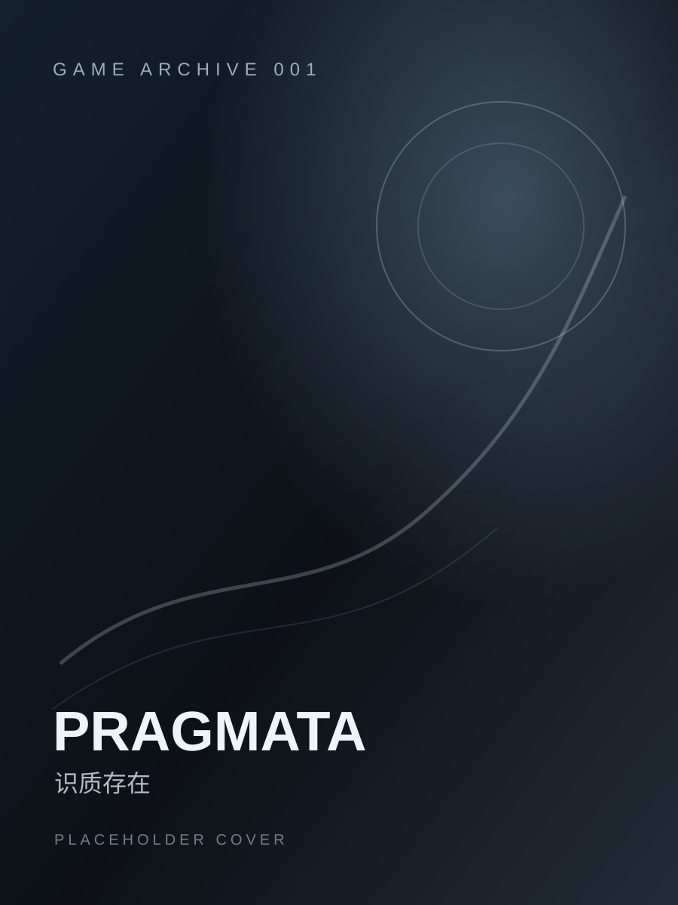

GAME 001 · COMPLETED
识质存在
PRAGMATA
一周目通关 · 基本完成常规收集
“从射击解谜时的手忙脚乱，到后来操作逐渐变得丝滑；也是它让我重新产生了在宿舍配一台游戏 PC 的想法。”
评分是怎么来的
这次通关，我真正记住了什么
科幻氛围和角色塑造
整体玩下来，我其实挺喜欢《识质存在》。角色塑造和科幻氛围都做得不错， Hugh 与 Diana 一起行动的过程也很容易让人投入。Diana 带来了一种很明显的 “养女儿”感，基地里的互动本来应该是很治愈的一部分。
但我自己的游玩方式相当功利：每次回基地基本都是为了升级装备，然后继续变强。 再加上 Switch 2 版本的画面表现不够好，我没有太多心思停下来认真看 Diana 和家具的各种互动。现在回想，这是这一周目比较遗憾的地方。
从手忙脚乱到逐渐丝滑
刚开始需要一边射击、一边解谜和破解，还要顾及走位、瞄准和躲避攻击， 操作非常不适应。经常顾着处理机制，连怪物打过来了都忘记躲。
熟悉以后体验完全不一样。等操作形成习惯之后，战斗逐渐变得非常顺滑， 装备和能力也可以组合出很多玩法。只是这一周目我没有刻意研究极端配装， 基本按照自己顺手的方式打到了通关。
Switch 2 版本留下的遗憾
我愿意给它登陆 Switch 2 本身加分，但实际体验里掉帧比较明显， 人物建模、光照和整体视觉效果也都明显打了折扣。偏偏这是一款很依赖 科幻场景和人物表现的游戏，所以这些缩水会直接影响沉浸感。
掌机模式尤其不适合我。游戏本身需要的操作很多，掌机按起来更加局促， 再加上我的左扳机键还有点失灵，所以大部分时间我都是坐在大屏幕前， 用主机模式完成这一周目。
很有意思的是：我本来只是想在 Switch 上玩一款 3A 游戏，最后却因为 对画质和帧数不满足，重新产生了在宿舍配一台台式游戏 PC 的想法。
完成情况
一周目主线通关
基本完成常规物品收集
完成约 3–4 个隐藏关卡
后期高难度小游戏未完成
隐藏关卡未全部完成
狂月模式未挑战
截图墙
把你自己的截图替换到 assets/screenshots/pragmata/ 目录后，再把下面的占位卡换成 <img> 即可。
以后还会再玩吗？
如果以后在宿舍配好 PC，我可能会重新买一份 PC 版，再完整玩一次。 到时候想用更好的画质和更稳定的帧数重新体验场景，也想认真看看 Diana 的基地互动、研究不同 Build，并把隐藏关卡和一些高难度内容补完。